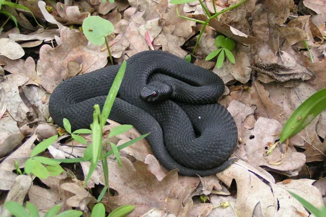
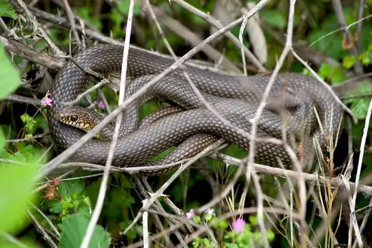
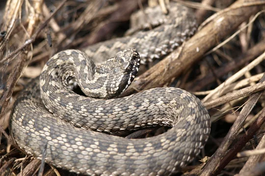

Snakes of Ukraine
11 living snake species are recorded in Ukraine in SnakeList: 3 venomous and 8 non-venomous, from 2 families. 4 fossil species found here are listed separately and not counted.
- 11living species
- 2families
- 4fossil, not counted
Danger to people · tap a number to show only those snakes
- 0mildly venomous
- 0giant constrictors
Harmful = dangerously venomous + giant constrictors. Harmless = not venomous and not a giant constrictor. Mildly venomous snakes have no serious bites to people documented. Any snake can bite.
These totals count the unique living snake species SnakeList records in Ukraine; the 4 fossil species found here are listed separately and not counted. A species counts if it is recorded anywhere in the country, so not every snake lives in every part of it.
In SnakeList’s checklist filters
How many of the 11 living species here each filter in the SnakeList app picks out – tap a number to show only those snakes. The app’s own counts for Ukraine also include the 4 fossil species listed separately below.
Snake family3 types, 2 families
Type
Family
Habitats13 habitat groups
Habitats are estimated from where each snake is recorded and what kind of snake it is, as in SnakeList; a snake can count in several.
Characteristics3 venomous, 5 constrictors
Constrictor and Non-constrictor count only snakes whose family or genus is documented as constricting or not; the rest are not documented.
Other filters1 popular, 0 rare
- 0invasive
- 0rare
- 0no photos
- 4extinct
Species
Showing 11 species

AdderVipera nikolskii Aesculapian SnakeZamenis longissimus
Aesculapian SnakeZamenis longissimus Dice SnakeNatrix tessellata
Dice SnakeNatrix tessellata Dione SnakeElaphe dione
Dione SnakeElaphe dione East-Four-lined RatsnakeElaphe sauromates
East-Four-lined RatsnakeElaphe sauromates European AdderVipera berus
European AdderVipera berus Four-lined SnakeElaphe quatuorlineata
Four-lined SnakeElaphe quatuorlineata Grass SnakeNatrix natrix
Grass SnakeNatrix natrix
Large Whip Snake (caspius)Dolichophis caspius Smooth SnakeCoronella austriaca
Smooth SnakeCoronella austriaca
Steppe ViperVipera renardi
No snakes in Ukraine match.
Fossil snakes found here
These snakes are known only from fossils found in Ukraine. They are not living species and are not counted in this page’s totals. The geological ages given are approximate: they come from the rock layers the fossils were found in, and the dating and classification of fossil snakes are revised as new material is studied.
- Elaphe kohfidischi (late Miocene, about 8.5 million years ago)
- Naja romani (latest Miocene, about 6 million years ago)
- Vipera meotica (late Miocene, about 7 million years ago)
- Vipera ukrainica (late Miocene, about 11 million years ago)
How precisely they are recorded
Of the 11 living species recorded in Ukraine, 10 are recorded by region in SnakeList’s data; 1 is recorded only for Ukraine as a whole, so the region pages list it as possible rather than recorded. SnakeList records each species by region, not by exact spot, so a species listed for a region may live in only part of it.
Regions
The regions where SnakeList records snakes, with how many living species are recorded in each. Each page has its species, venomous snakes, families, the species found only there, its cities and neighbours.
- Cherkasy 5 species
- Chernihiv 3 species
- Chernivtsi 4 species
- Dnipropetrovsk 6 species
- Donetsk 4 species
- Ivano-Frankivsk 4 species
- Kharkiv 5 species
- Kherson 5 species
- Khmelnytskyi 4 species
- Kirovohrad 2 species
- Kyiv 4 species
- Luhansk 4 species
- Lviv 3 species
- Mykolaiv 7 species
- Odessa 5 species
- Poltava 6 species
- Rivne 3 species
- Sumy 4 species
- Ternopil 4 species
- Vinnytsia 3 species
- Volyn 2 species
- Zakarpattia 5 species
- Zaporizhzhia 6 species
- Zhytomyr 3 species
No place matches that.
Cities
Its biggest cities, biggest first. SnakeList records snakes by region, not by city, so each city page shows the species recorded in its region and, separately, those only possible there - not species confirmed in the city.
- Kyiv Kyiv Region
- Kharkiv Kharkiv Region
- Dnipro Dnipropetrovsk
- Donetsk Donetsk Region
- Odessa Odessa Region
- Zaporizhia Zaporizhzhia
- Lviv Lviv Region
- Kryvyi Rih Dnipropetrovsk
- Mykolayiv Mykolaiv
- Mariupol Donetsk Region
- Luhansk Luhansk Region
- Khmelnytskyi Khmelnytskyi Region
- Makiyivka Donetsk Region
- Vinnytsia Vinnytsia Region
- Kherson Kherson Region
- Poltava Poltava Region
- Chernihiv Chernihiv Region
- Cherkasy Cherkasy Region
- Sumy Sumy Region
- Zhytomyr Zhytomyr Region
- Horlivka Donetsk Region
- Rivne Rivne Region
- Kropyvnytskyi Kirovohrad
- Kamianske Dnipropetrovsk
- Chernivtsi Chernivtsi Region
No place matches that.